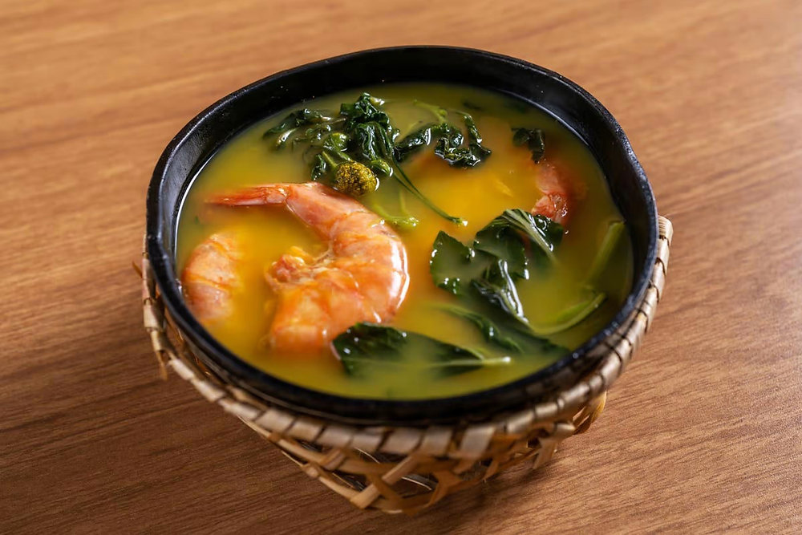

Tacacá
Imagem: Wikimedia Commons
O tacacá é uma sopa típica da região amazônica, feita com tucupi, goma de tapioca, camarão seco e jambu, uma erva que causa leve dormência na boca.
Imagem: Wikimedia Commons
O tacacá é uma sopa típica da região amazônica, feita com tucupi, goma de tapioca, camarão seco e jambu, uma erva que causa leve dormência na boca.

Imagem: Wikimedia Commons
Prato tradicional do Pará, consiste em pato cozido servido no tucupi e jambu. É muito servido em festas tradicionais, como o Círio de Nazaré.
Imagem: Wikimedia Commons
Feita com folhas de mandioca moídas e cozidas por vários dias, misturadas com carnes diversas. É uma espécie de feijoada paraense.